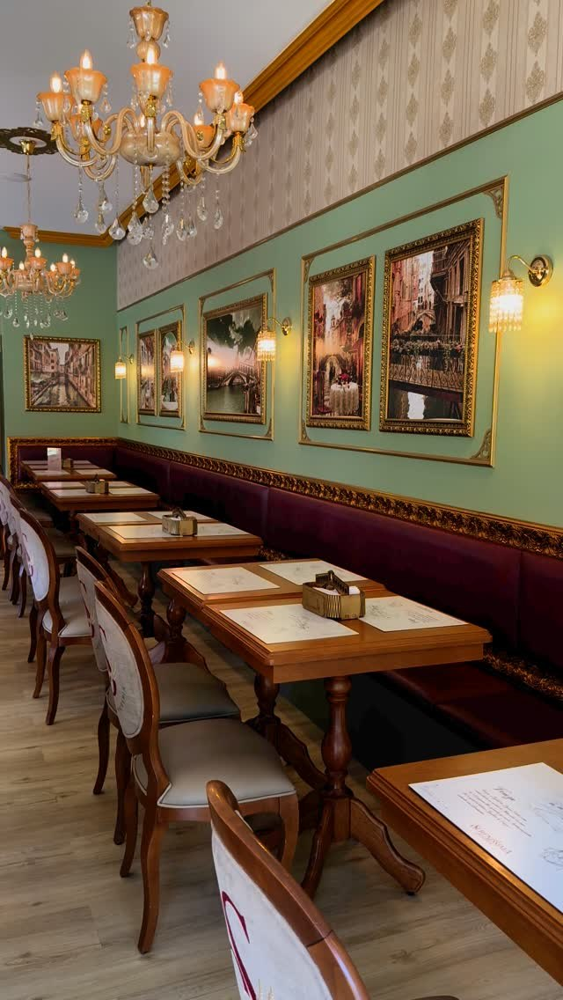
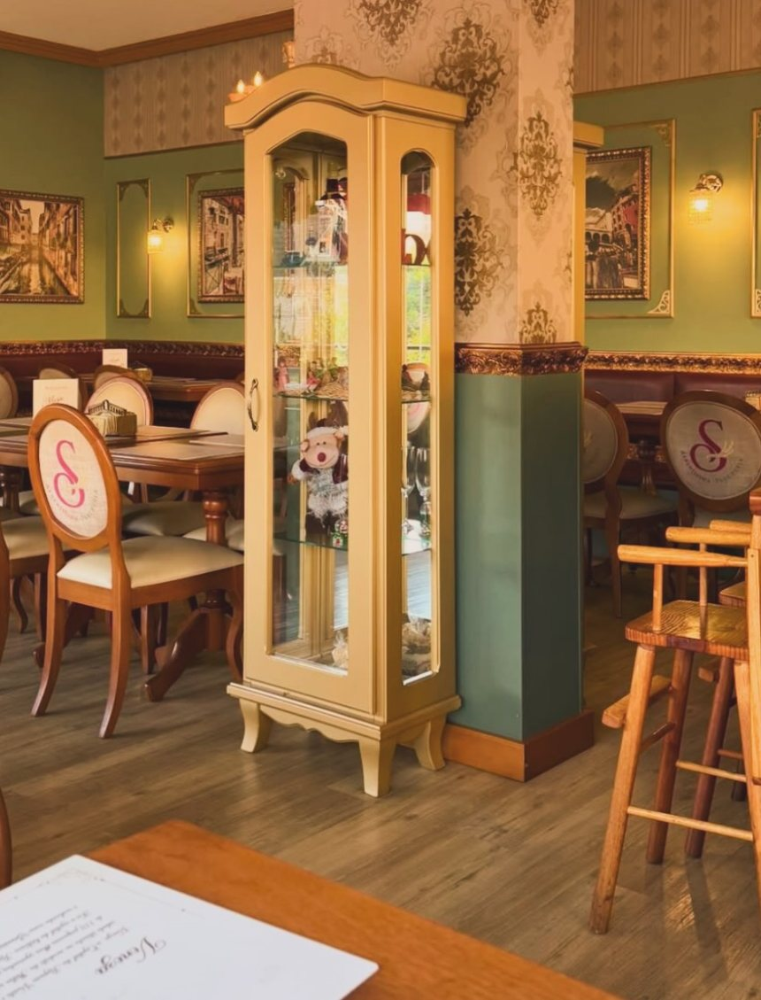
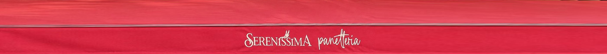
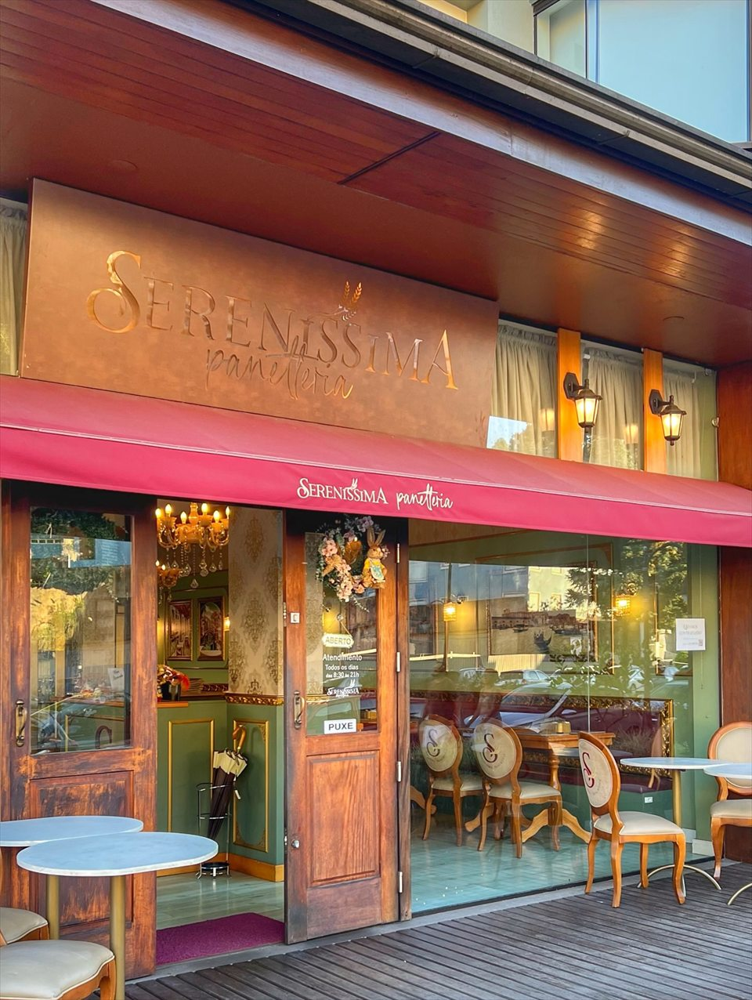

Ambiente veneziano
Um salão lindo, aconchegante e iluminado, inspirado na Sereníssima República. Silencioso, perfeito para conversar sem pressa.
Gramado · Rio Grande do Sul
la dolce mattina
A primeira cafeteria inspirada em Veneza. Café colonial, cozinha à la carte, pães de fermentação natural e cafés especiais em um salão iluminado, pensado para momentos que você vai querer guardar.


A experiência Sereníssima
Um salão lindo, aconchegante e iluminado, inspirado na Sereníssima República. Silencioso, perfeito para conversar sem pressa.
Ingredientes de qualidade, receitas bem elaboradas e opções para o café, o almoço, o jantar e a sobremesa.
Uma equipe cuidadosa e respeitosa, que transforma cada visita em um momento especial em Gramado.
A mesma excelência da casa, onde você estiver. Pedidos bem embalados, quentinhos e no tempo certo.


Benvenuti
Veneza, a Sereníssima, sempre foi sinônimo de beleza, encontros e boa mesa. Trouxemos esse espírito para o centro de Gramado: a mesa posta com calma, o aroma do pão saindo do forno e o café tirado com cuidado.
Aqui, cada detalhe foi pensado para que você saia com mais do que uma refeição: saia com um daqueles momentos que fazem a viagem (ou o dia) valer a pena.
Dicono di noi
“O grande destaque, sem dúvida, foi o croissant com presunto parma, gorgonzola, figo e mel, simplesmente surreal de bom, tanto que repetimos. […] O ambiente é limpo, organizado e muito bem decorado. Uma experiência para quem gosta de bons lugares, boa gastronomia e ingredientes de qualidade.”
“Estive em Gramado em janeiro mas a experiência foi tão boa que encontrei as fotos no meu celular e precisava avaliar! Tudo muito gostoso, leve, com diversas opções de café mas também de jantar/almoço, o que agrada a todos! Doces muito bons, e o local super aconchegante! Com certeza ficou na memória e voltaremos.”
Já nos visitou? Sua opinião é muito importante para nós.
Avaliar no TripadvisorPrenotazione
Gramado é disputada, e a nossa casa também. Reservando, sua mesa fica esperando por você, sem filas e sem imprevistos, para viver a experiência completa com calma.
Prefere falar direto? WhatsApp (54) 3699-1164
Consegna a domicilio
No hotel, na pousada ou em casa: peça pelo iFood e receba nossos croissants, waffles e cafés com a mesma excelência do salão.
Vieni a trovarci